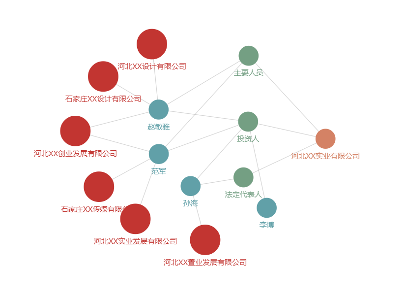

echarts关系图表，此图是坐标关系图，此图用的随机坐标，此图可以拖拽，更方便整理关系，
引入echarts.js就可以实现

代码：
var graph={ //这是数据项目中一般都是获取到的
nodes:[
{"id":"0","name":"河北XX设计有限公司","attributes":{"modularity_class":0}},
{"id":"1","name":"石家庄XX设计有限公司","attributes":{"modularity_class":0}},
{"id":"2","name":"河北XX创业发展有限公司","attributes":{"modularity_class":0}},
{"id":"3","name":"河北XX置业发展有限公司","attributes":{"modularity_class":0}},
{"id":"4","name":"石家庄XX传媒有限公司","attributes":{"modularity_class":0}},
{"id":"5","name":"河北XX实业发展有限公司","attributes":{"modularity_class":0}},
{"id":"6","name":"赵敏雅","attributes":{"modularity_class":1}},
{"id":"7","name":"范军","attributes":{"modularity_class":1}},
{"id":"8","name":"孙海","attributes":{"modularity_class":1}},
{"id":"9","name":"李博","attributes":{"modularity_class":1}},
{"id":"10","name":"主要人员","attributes":{"modularity_class":2}},
{"id":"11","name":"投资人","attributes":{"modularity_class":2}},
{"id":"12","name":"法定代表人","attributes":{"modularity_class":2}},
{"id":"13","name":"河北XX实业有限公司","attributes":{"modularity_class":3}}
],
links:[
{"id":"0","source":"0","target":"6"},
{"id":"1","source":"1","target":"6"},
{"id":"2","source":"2","target":"6"},
{"id":"3","source":"2","target":"7"},
{"id":"4","source":"3","target":"8"},
{"id":"5","source":"4","target":"7"},
{"id":"6","source":"5","target":"7"},
{"id":"7","source":"6","target":"10"},
{"id":"8","source":"7","target":"10"},
{"id":"9","source":"6","target":"11"},
{"id":"10","source":"7","target":"11"},
{"id":"11","source":"8","target":"11"},
{"id":"12","source":"8","target":"12"},
{"id":"13","source":"9","target":"11"},
{"id":"14","source":"10","target":"13"},
{"id":"15","source":"11","target":"13"},
{"id":"16","source":"12","target":"13"}
]
};
var myChart = echarts.init(document.getElementById('guanxitu'));
var categories=[
{
id:0,
name: '公司',
itemStyle:{normal:{color:'#c23531'}},
symbolSize:[42,42]
},
{
id:1,
name: '主要成员',
itemStyle:{normal:{color:'#61a0a8'}},
symbolSize:[42,42]
},
{
id:2,
name:'自然人',
itemStyle:{normal:{color:'#749f83'}},
symbolSize:[42,42]
},
{
id:3,
name:'实业公司',
itemStyle:{normal:{color:'#d48265'}},
symbolSize:[42,42]
}
];
var winWidth=document.body.clientWidth;
var winHeight=document.body.clientHeight;
graph.nodes.forEach(function (node) {
node.x=parseInt(Math.random()*800); //这里是最重要的如果数据中有返回节点x,y位置这里就不用设置，如果没有这里一定要设置node.x和node.y，不然无法定位节点 也实现不了拖拽了；
node.y=parseInt(Math.random()*800);
if(node.attributes.modularity_class != 0){
node.symbolSize=[42,42];
node.sizeFlag=[42,42];
}else{
node.symbolSize=[64,64];
node.sizeFlag=[64,64];
}
node.category = node.attributes.modularity_class;
node.label={
normal:{
show:true
}
}
});
var option = { //这里是option配置
legend: [{ //图例组件
data: categories.map(function (a) {
return a.name;
}),
top:0,
left:(winWidth-1200)/2, //这里是图例组件定位使用的，自定义
itemGap:26,
textStyle:{
padding:[0,12]
},
backgroundColor:'#f5f5f5'
}],
animationDurationUpdate: 1500,
animationEasingUpdate: 'quinticInOut',
series : [
{
type: 'graph',
layout: 'none', //因为节点的位置已经有了就不用在这里使用布局了
circular:{rotateLabel:true},
animation: false,
data: graph.nodes,
links: graph.links,
categories: categories, //节点分类的类目
roam: true, //添加缩放和移动
draggable: false, //注意这里设置为false，不然拖拽鼠标和节点有偏移
label: {
normal: {
position: 'bottom',
rich:{
bg:{
backgroundColor: '#f5f5f5'
}
}
}
}
}
]
};
myChart.setOption(option);
initInvisibleGraphic() ;
function initInvisibleGraphic() {
// Add shadow circles (which is not visible) to enable drag.
myChart.setOption({
graphic: echarts.util.map(option.series[0].data, function (item, dataIndex) {
//使用图形元素组件在节点上划出一个隐形的图形覆盖住节点
var tmpPos=myChart.convertToPixel({'seriesIndex': 0},[item.x,item.y]);
return {
type: 'circle',
id:dataIndex,
position: tmpPos,
shape: {
cx: 0,
cy: 0,
r: 20
},
// silent:true,
invisible: true,
draggable: true,
ondrag: echarts.util.curry(onPointDragging, dataIndex),
z: 100 //使图层在最高层
};
})
});
window.addEventListener('resize', updatePosition);
myChart.on('dataZoom', updatePosition);
}
myChart.on('graphRoam', updatePosition);
function updatePosition() { //更新节点定位的函数
myChart.setOption({
graphic: echarts.util.map(option.series[0].data, function (item, dataIndex) {
var tmpPos=myChart.convertToPixel({'seriesIndex': 0},[item.x,item.y]);
return {
position: tmpPos
};
})
});
}
function onPointDragging(dataIndex) { //节点上图层拖拽执行的函数
var tmpPos=myChart.convertFromPixel({'seriesIndex': 0},this.position);
option.series[0].data[dataIndex].x = tmpPos[0];
option.series[0].data[dataIndex].y = tmpPos[1];
myChart.setOption(option);
updatePosition();
}